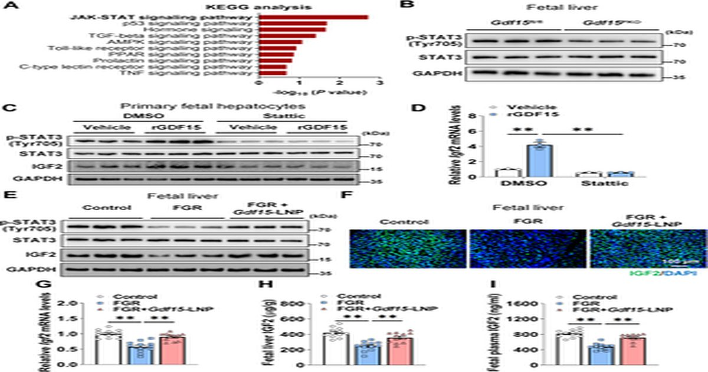

Дефицит плацентарного GDF15 вызывает ограничение роста плода путем ингибирования оси STAT3-IGF2 печени плода
xiao Peng Liu, Xiao Zhang, Chun Xia Cai, Miao Miao Qin, Xiang Kai Leng, Jia Hao Chen, Yi Fan Han, Jun Ying Xiao, Jia He Huang, Jiang Wei Wu Fetal growth restriction (FGR) является основной причиной перинатальной заболеваемости и смертности, но ее основной механизм остается неуловимым.
Здесь мы показываем, что уровни фактора дифференцировки роста 15 (GDF15) значительно снижаются в плаценте и кровообращении плода в моделях FGR мышей и свиней и коррелируют